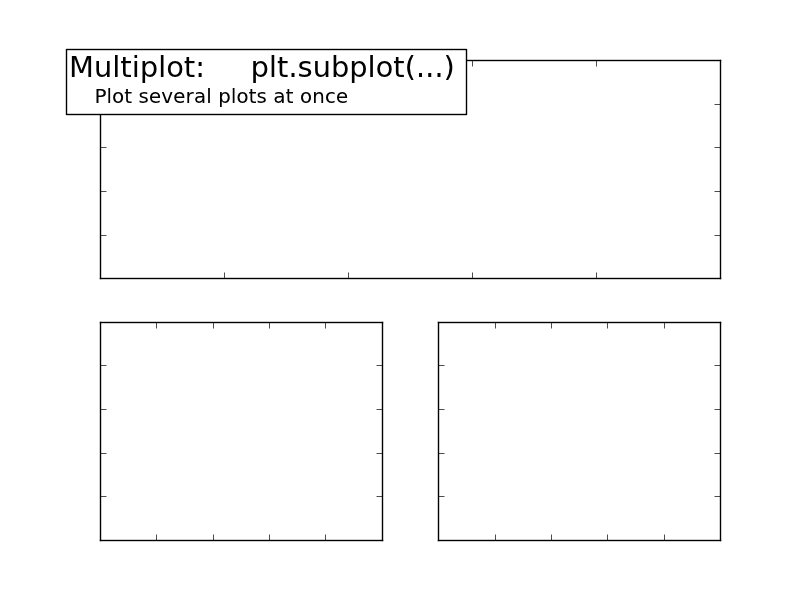

The ‘subplot’ command can be used to stack multiple plots in a figure.
Python source code: plot_multiplot.py
import matplotlib.pyplot as plt
ax = plt.subplot(2, 1, 1)
ax.set_xticklabels([])
ax.set_yticklabels([])
plt.text(-0.05, 1.02, "Multiplot: plt.subplot(...)\n",
horizontalalignment='left',
verticalalignment='top',
size='xx-large',
bbox=dict(facecolor='white', alpha=1.0, width=400, height=65),
transform=ax.transAxes)
plt.text(-0.05, 1.01, "\n\n Plot several plots at once ",
horizontalalignment='left',
verticalalignment='top',
size='large',
transform=ax.transAxes)
ax = plt.subplot(2, 2, 3)
ax.set_xticklabels([])
ax.set_yticklabels([])
ax = plt.subplot(2, 2, 4)
ax.set_xticklabels([])
ax.set_yticklabels([])
plt.show()
Total running time of the example: 0.17 seconds ( 0 minutes 0.17 seconds)